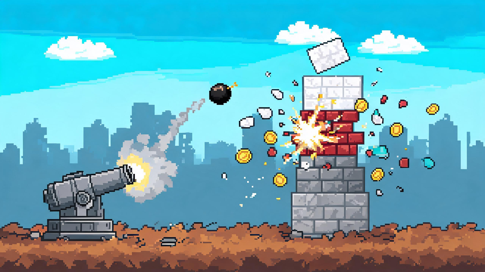
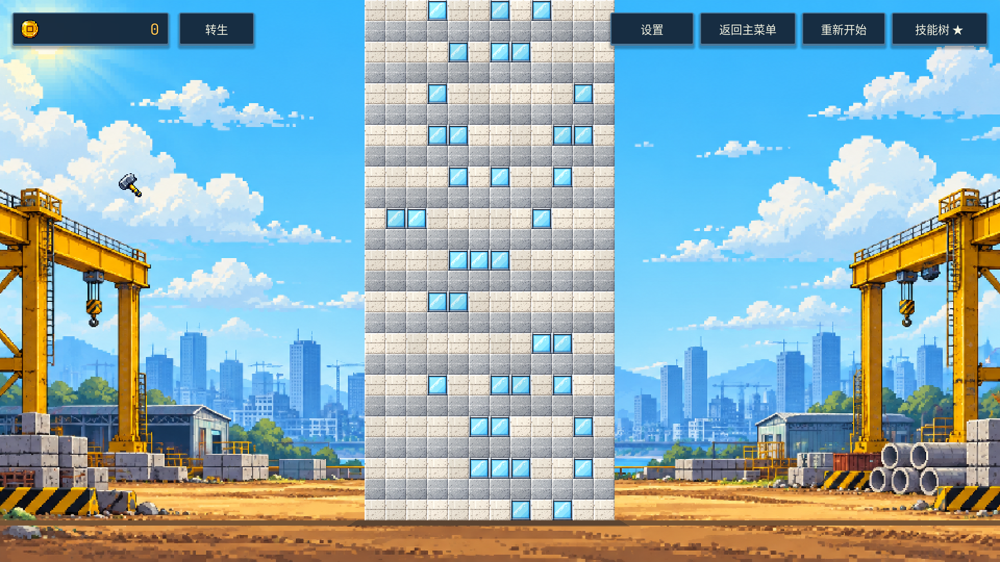
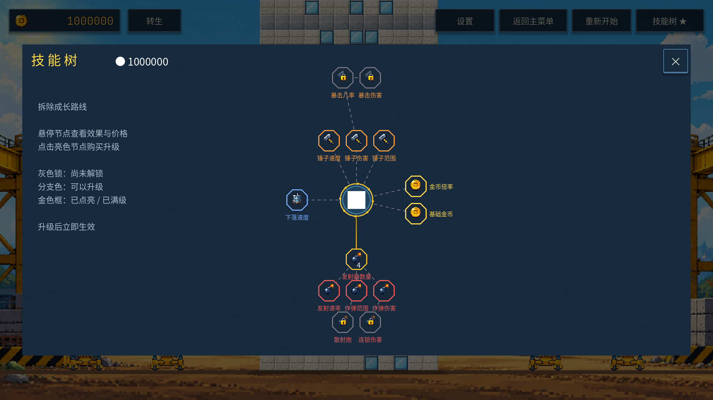

总目录 / Boomame
Boomame · 2D 挂机破坏游戏
从手动砸楼到自动轰炸：点击建筑方块获得金币，投入锤子、经济与炮台升级，让重复操作逐步交给自动化。转生后保留永久加成，继续挑战更高效率的拆楼循环。

实机演示与当前界面


一、玩法设计：把“省力”做成成长
- 动作循环：破坏 → 收益 → 升级 → 更强破坏。金币按击破结算，伤害、范围与频率改变实际击破效率。
- 机制成长：开局锤击 → 炮台辅助 → 多炮台自动轰炸。炮台数量、速度、伤害和范围分别提供成长选择。
- 跨局成长：转生清空单局进度，永久技能与转生点保留，让下一局更快进入自动化阶段。
- 反馈：命中白闪与裂纹、材质碎屑、爆炸、落地扬尘、金币飞行及音效共同承接破坏结果；可调整震屏、特效密度及减少动态效果。
当前是可玩的垂直切片，包含动作驱动的新手引导、技能树、最多四座自动炮台、转生、三个独立存档槽、设置与生涯统计。离线收益尚未实现。
二、数值迭代：效果表、击破时间与转生边界
2026-10-09 版本把升级效果统一为等级表，并从等级重建派生属性，避免购买、读档与重复重算产生不同结果。伤害、速度、范围、经济和炮台各有明确计算口径，不把所有属性硬套成同一条成长公式。
锤击伤害 =（1 + 永久基础伤害）× 单局锤伤表 ×（1 + 破坏之力）
每块金币 = round（（材质金币 + 单局基础金币 + 永久击破金币）× 单局金币倍率表 ×（1 + 金币之心））
转生收益：拆楼累计产出低于 4000 时不能转生；达到门槛后，RP = min（8，floor（sqrt（产出 / 1000）））。
每块金币 = round（（材质金币 + 单局基础金币 + 永久击破金币）× 单局金币倍率表 ×（1 + 金币之心））
转生收益：拆楼累计产出低于 4000 时不能转生；达到门槛后，RP = min（8，floor（sqrt（产出 / 1000）））。
- 点击节拍：基础间隔 0.5 秒，下限 0.30 秒。以需要几次锤击及覆盖多少方块衡量升级效果。
- 材质阶梯：累计击破达到 0 / 100 / 450 / 1400 时，新补方块使用对应材质、HP 与金币；已有方块不原地升级。
- 转生边界：4000 / 9000 / 16000 拆楼产出分别获得 2 / 3 / 4 RP，单局最多 8 RP；开局赠送金币不计作拆楼产出。
- 模型与实测分开：24 个模拟场景覆盖不同随机种子、爆炸位置、手动 / 挂机和第一 / 第二局。当前模型首炮约 82–83 秒，首转主动约 4.3–4.8 分钟、挂机约 6.7–8.5 分钟；模型忽略弹道、补层等待和操作误差，真人节奏仍需复测。
三、工程迭代：让塌落可控、可回归
独立方块、唯一槽位与楼顶补层
建筑按列托管，方块使用冻结刚体承接碰撞与命中。破坏后，该列按有效槽位向底部压实，各方块通过加速动画落到唯一目标槽位；落定后再从顶部补足。下落途中再次破坏时重新分配目标，保持顺序与槽位唯一性。
这一方案保留逐块塌落的层次，同时避免自由刚体带来的散落、旋转、重叠和卡住。重建通过延迟调用放到物理步结束后执行，生成初始 360 块建筑时每帧处理 24 块，分散实例化成本。
2026-10-09：修复“砸掉下方，上方不下落”
- 原因一：受击回弹和下落动画同时修改刚体位置，旧回弹可能把已经落定的方块拉回原处。修复后受击位移只移动视觉层，下落开始时清理残留抖动。
- 原因二：最后落定时同帧发生新破坏，补层先于待处理的列重算，导致下方空洞被原地填回。修复后只在列重算完成且所有方块落定时补层。
- 结算保护：同一方块多次命中只允许一次破碎、奖励与列更新。
验证结果：在独立存档目录运行 11 项下落回归检查，全部通过。检查实际坐标、每列 30 个唯一槽位和下落计数归零，覆盖范围锤、连锁炸弹、重复命中、最后落定瞬间再次破坏与跨列连续破坏。炸弹连锁用例一次破坏 117 块后恢复完整网格。
回归脚本 · 检查报告 · 本次更新记录与验证范围
四、我的工作与文档
个人负责核心循环、成长与转生设计、数值表、Godot 实现、界面与反馈整合、问题定位和回归验证。AI 协作过程与设计取舍单独留档；当前演示美术由 AI 生成后整理为运行素材，音效与 BGM 采用程序生成，字体随项目保留许可文件。
- 当前工程设计文档目录：数值、技能树、转生、规格、体验与模块分工。
- AI 提效工作流：协作方法与开发案例。
- 早期 GDD（Word）与AI 协作文档（Word）：保留原始材料；当前参数与行为以本页链接的工程文档为准。